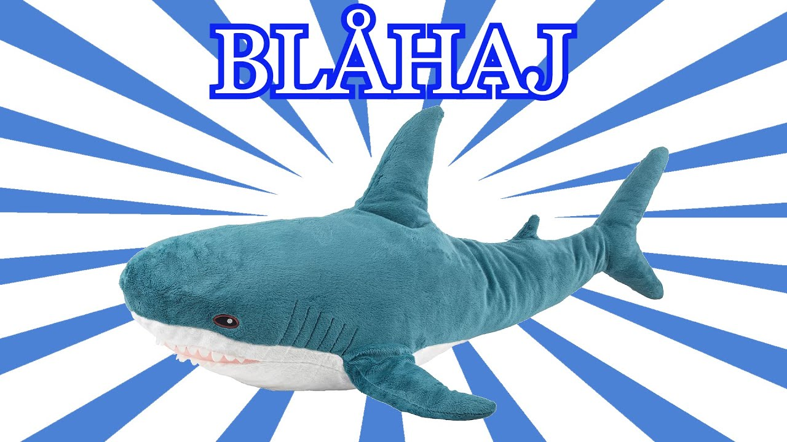

Zdroje
Faktografické údaje: wikipedia.org
Rozmery Blåhaja a fotografia: ikea.com
Raritný obrázok: change.org
Ilustračný obrázok: youtube.com
Ďakujeme všetkým expertom, ktorí poskytli dôležité informácie o Blåhajovi: Robin, Timko, Veronika, Jano, Hugo, Alexx, Mirika.

Ilustračný obrázok Blåhaja. Zdroj: youtube.com